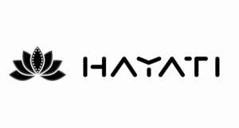

Trade Mark Journal No.2026/007 13 February 2026
UK00004326796 20 January 2026 (30,32)

- Class 30
- Biscuits; cookies; peppermint sweets; sweets; candies; cocoa; coffee; Vegetal preparations for use as coffee substitutes; cereal preparations; chewing gum; tea; chocolate; confectionery; sugar confectionery; ice cream; flour; meal; fondants [confectionery]; sugar; cocoa beverages with milk; coffee beverages with milk; chocolate beverages with milk; bread; golden syrup; lozenges [confectionery]; Pastilles [confectionery]; Pastries; liquorice [confectionery]; beer vinegar; coffee-based beverages; cocoa-based beverages; chocolate-based beverages; coffee substitutes; propolis; bee glue; relish condiment]; royal jelly; fruit jellies [confectionery]; Iced tea(Non-medicated -); tea-based beverages; cereal-based snack food; Flowers or leaves for use as tea substitutes; chamomile-based beverages; mints for breath freshening; coffee capsules, filled; Tea beverages.
- Class 32
- Beer; ginger beer; ginger ale; non-alcoholic fruit juice beverages; whey beverages; Non-alcoholic essences for making beverages; Beverages (Whey -); fruit juices; fruit juice; syrups for beverages; waters [beverages]; lithia water; mineral water [beverages]; seltzer water; table waters; Lemonades; vegetable juices [beverages]; syrups for lemonade; malt wort; Unfermented grape must; sherbets [beverages]; sorbets[beverages]; tomato juice [beverage]; non-alcoholic beverages; carbonated water; aerated water; Sarsaparilla [non-alcoholic beverage]; Smoothies; beer-based cocktails; soya-based beverages,other than milk substitutes; protein-enriched sports beverages; rice-based beverages, other than milk substitutes; non-alcoholic beverages flavoured with coffee; non-alcoholic beverages flavored with coffee; non-alcoholic beverages flavoured with tea; non-alcoholic beverages flavored with tea; soft drinks; barley wine [beer]; energy drinks; non-alcoholic dried fruit beverages; starch-based dry mixes for beverage preparation; non-alcoholic beer-based cocktails; non-alcoholic beer; powders for making soft drinks; non-alcoholic fruit vinegar beverages; grape ales.
PAX INTERNATIONAL LIMITED
Representative: Yayipcom